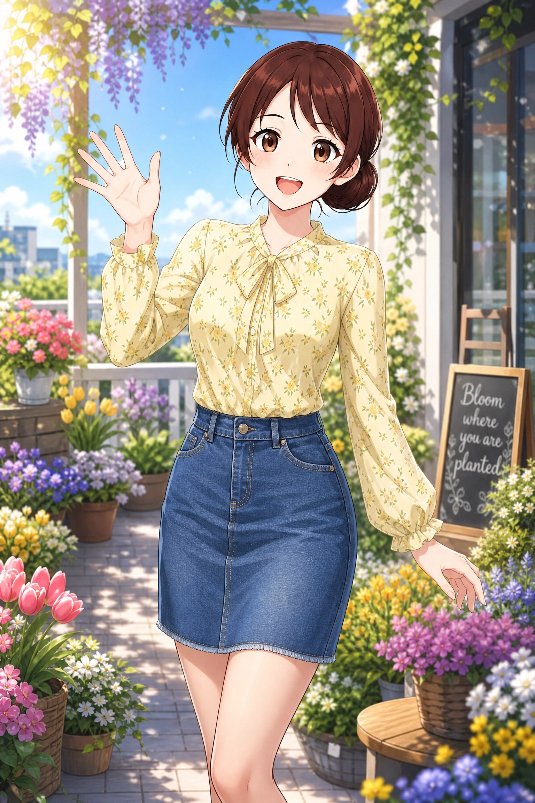
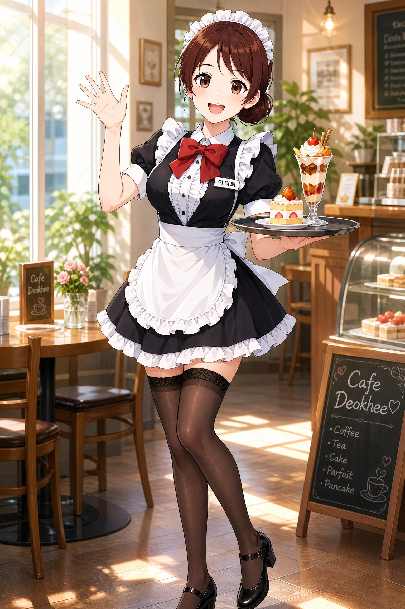
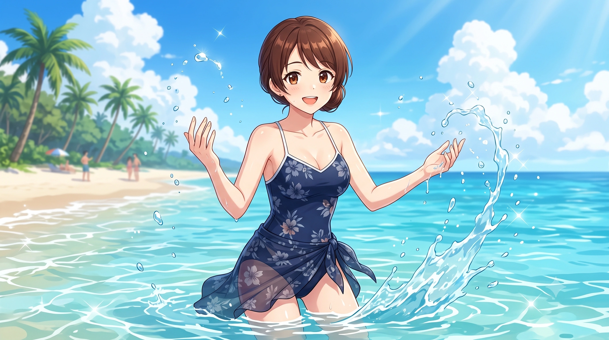
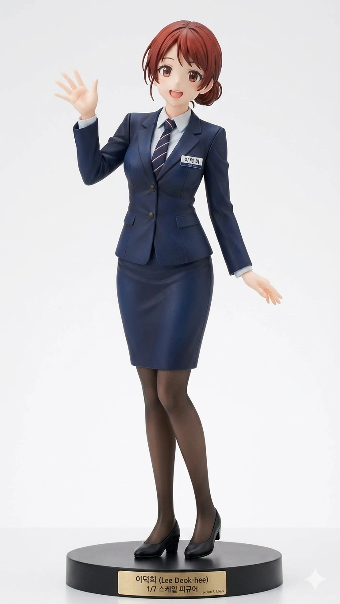
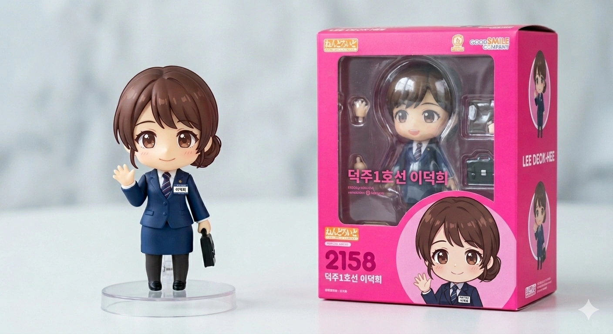
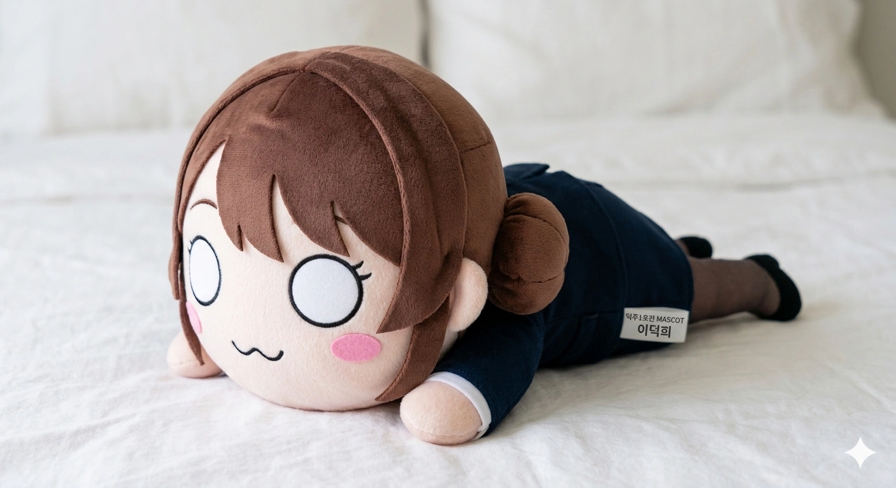
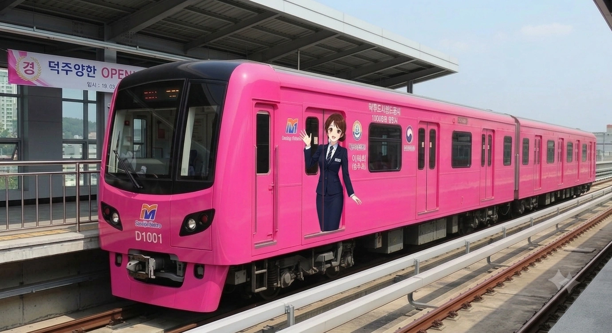

덕주도시철도공사 캐릭터들
| 등장인물 | 1호선 |
|---|---|
 이덕희 이덕희
|
|
| * 덕주도시철도공사는 효빈교통공사 및 타 지자체 도시철도와는 별개의 운영 기관입니다. | |
- 1. 개요
- 2. 상세 설정
- 3. 인간 관계
- 4. 성우 장난 및 기괴한 세계관 충돌
- 5. 사건사고 및 논란(?)
- 6. 여담 및 해프닝
- 7. 미디어 믹스 및 굿즈
1. 개요
안내방송에서 이러면 징계 안 먹나
덕빈남도의 심장을 관통하는 분홍빛 활력, 덕주 도시철도 1호선의 마스코트 역무원. 2026년 4월 빈주 2호선 김소빈 일러스트 구석에 의문의 실루엣으로 등장해 떡밥을 굴리다가, 2026년 5월 수많은 철도 동호인과 럽라이버들의 열광 속에 정식 공개되었다. 초기에는 당시 도지사였던 석형준의 비상식적인 탄압을 받아 빛을 보지 못할 뻔했으나, 폭정을 심판하고 취임한 김영산 신임 지사의 전폭적인 지지를 받으며 덕빈남도의 최고 인기 마스코트로 화려하게 부활했다.
덕빈남도 덕주시의 핫핑크 노선(#FF4F91)인 1호선을 상징하는 캐릭터다. '이덕희'라는 구수하고 친근한 이름과 달리 극강의 귀여운 외모와 통통 튀는 텐션을 자랑하는 갭모에의 결정체. 야자와 니코의 색상인 핫핑크를 상징하는 1호선에서 근무하는 것을 인생 최대의 업적으로 여기며, 본인의 생일마저 덕주 1호선 개통일과 동일한 7월 7일이라 스스로를 '럭키 세븐의 화신'이라 부른다.
2. 상세 설정
2.1. 성격 및 특징 (럭키 세븐과 哎呀, 그리고 K-아재 입맛)
덕주도시철도공사의 귀염둥이 막내. 애교가 철철 넘치며 승객들을 대할 때 항상 밝은 에너지를 뿜어낸다.
- 대환장 언어 패치: 당황하거나 억울한 일이 생기면 자신도 모르게 "哎야(아이야)!"를 시작으로 알 수 없는 중국어 랩을 쏟아낸다. 정작 본인은 중국어를 정식으로 배운 적이 없고 무협지나 중드, 그리고 탕쿠쿠의 대사를 보고 외운 야매 중국어라 문법이 다 틀려먹었다는 게 킬링 포인트.
- K-아재 입맛의 소유자: 외모는 아이돌 뺨치는 미소녀지만 입맛은 덕산구 노가다 십장 수준이다. "어허! 피가 맑아지려면 뚝배기에 깍두기 국물을 부어야지!"라며 쉬는 시간마다 덕주역 앞 뼈해장국집에서 다대기를 팍팍 풀고 있는 모습이 자주 목격된다.
2.2. 출신 및 혈통 (덕주의 로컬리티와 1/8 혼혈)
'이덕희'라는 이름은 사실 중국어 본명인 '리더시(李德熙)'를 한국식 한자음으로 그대로 읽은 것이다. 덕주시의 구도심인 덕산구는 예로부터 화교 출신 상인들이 자리를 잡고 정착해온 지역이다. 덕희는 아버지가 한국인, 어머니가 1/4 중국계 혼혈인 '1/8 혼혈'에 불과하며, 실질적인 유전자와 정체성은 100% 한국인에 가깝다.
2.3. '덕업일치'의 화신 (성덕 중의 성덕)
지독한 러브라이브 팬(럽순이)이다. 애초에 덕주 1호선 파견 역무원에 지원한 단 하나의 이유가 1호선의 상징색이 야자와 니코의 핫핑크(#FF4F91)였기 때문이다. 누군가 1호선 색깔을 보고 "이거 마젠타인가요?" 혹은 "빨간색이네요"라고 하면 눈에 불을 켜고 "정확히 컬러 코드 #FF4F91의 핫핑크입니다!!"라고 10분 동안 설교를 늘어놓는다.
2.4. 외형 및 디자인 (K-역무원의 정석과 명찰의 진실)
어두운 갈색 머리를 단정하게 뒤로 묶은 로우번 스타일에 부드러운 갈색 눈동자가 특징이다. 짙은 네이비블루 투버튼 정장 자켓과 무릎 길이의 H라인 스커트를 착용하여 매우 전문적인 'K-직장인 역무원'의 비주얼을 보여준다.
공식 일러스트 라펠에 달린 이름표에는 분명 차장이라고 적혀 있다. 22세 파견 대학생 역무원이 어떻게 차장 직급을 달았는지 수많은 추측이 오갔으나, 사실 "근무 중인 역의 진짜 차장님이 일 잘한다며 기분이나 한번 내보라고 빌려준 것"을 가슴에 달고 그대로 프로필 사진을 찍어버린 것이다!

사복 (성덕의 오프 나들이)덕남대 철도경영학과 여대생의 흔한 사복 핏. 화사한 노란색 블라우스에 데님 스커트를 매치해 통통 튀는 20대 초반의 감성을 살렸다. 이 복장으로 국밥집 다대기를 푼다는 게 킬포인트다.

덕주역 지하상가 일일 알바덕주역 지하상가 카페 이벤트 날. 메이드복을 입고도 '이덕희'라고 굵게 적힌 역무원 명찰을 그대로 달고 있는 뻔뻔함이 덕산구 막내딸의 정체성을 증명한다.
3. 인간 관계
-
전노아 (빈효선): "아뮤즈 선배 통제기"
툭하면 1호선 덕남대역 근처로 놀러 와서 술판을 벌이는 전노아가 취해서 넥타이를 머리에 묶으려 하면, 덕희가 "선배님 여기서 이러시면 니코 선배님 성지에 먹칠하는 겁니다! 정신 차리십쇼!"라며 단호하게 참이슬 병을 압수해 버린다. 사실 한일 양국 성우 공통으로 같은 소속사 선배를 통제하는 묘한 현실 고증이다.
3.1. 가족 관계 (화주동 구도심 1/8 화교 가문)

건설 현장 소장인 한국인 아버지와 1/4 대만계 혼혈인 셰프 어머니, 그리고 아이돌 홈마(?) 언니와 함께한 모습. 덕희의 '1/8 혼혈'이라는 독특한 정체성을 완성한 가족이다.
👨 아버지: 이정길 (Lee Jeong-gil)
- 덕희의 K-아재 입맛 원흉. 퇴근 후 딸과 뼈해장국 먹는 게 유일한 낙.
정작 딸내미가 집에서 "니코니코니~" 시전할 때마다 보청기 볼륨을 조용히 낮추신다.
👩 어머니: 왕려화 (Wang Lyeo-hwa)
- 哎야(아이야) 잔소리 랩의 오리지널 공급원. 웍 국자로 등짝 스매싱을 날리는 실세.
"우리 집안은 대만계인데 쟤는 왜 대륙식 억양을 쓰냐"며 내심 한심해하심.
👩 언니: 이덕경 (Lee Deok-gyeong)
학력/경력: 덕남대 시각디자인학과 / 게임 스타트업 UI 디자이너 (비공식: 아이돌 홈마)
담당 성우: 이지현 (韓) / 쿠로사와 토모요 (日)
- 입만 열면 동생의 동심을 깨부수는 팩트 폭력기이자, 방 안엔 3D 남돌 굿즈가 가득한 어둠의 동맹 파트너.
덕희가 유니폼 훔쳐 입고 사진 찍었을 때 횡령죄라며 인스타에 박제해 버림.
4. 성우 장난 및 기괴한 세계관 충돌 (한·일 성우 필모그래피 대폭발)
이덕희를 논할 때 절대 빼놓을 수 없는 핵심 요소. 담당 성우들의 화려한 출연작과 현실 밈이 캐릭터를 완전히 집어삼킨 수준이다.
성공한 덕후의 끝판왕 (러브라이브! 하스노소라 - 카츠라기 이즈미): 럽순이 설정의 정점이자 성우 본체의 꿈이 이루어진 기적의 캐스팅. 이덕희가 그토록 럽라를 부르짖더니, 성우 본체가 아예 하스노소라의 '카츠라기 이즈미' 역으로 러브라이브 공식 시리즈에 합류해버렸다! 덕분에 덕주 1호선은 니코맘 성지를 넘어 하스노소라 팬들의 새로운 성지순례 코스로 강제 떡상 중이다.
하극상의 달인 (vs 심세이): 덕희는 22세 대학생, 심세이는 17세 여고생이지만, 신도 아마네(04년생)가 심세이 역의 페이튼 나오미(03년생, Liella! 멤버)를 볼 때마다 "세이 언니!! 핡!! 뚜이부치(對不起)!!"라며 달려드는 기괴한 하극상이 연출된다.
🦋 멘탈 붕괴와 극단적 도피 (BanG Dream! - 쿠라타 마시로)
단순히 성우가 같다는 수준을 넘어, 덕희가 진상 승객이나 악성 민원인들에게 시달리다 멘탈이 바닥나면 뱅드림!의 쿠라타 마시로(Morfonica의 메인 보컬) 톤으로 완전히 돌변한다. 평소의 핫핑크 인싸 텐션은 온데간데없이 사라지고, "덕주역... 너무 무서운 곳... 환승객이 나를 다 쳐다보고 있어... 무리무리... 집으로 돌아갈래..."라며 개찰구 구석에 쭈그려 앉아 바들바들 떠는 극강의 개복치 멘탈을 보여준다.
심지어 나비 모티브가 들어간 교복(츠키노모리 교복과 유사함)을 입은 창전선의 심세이(페이튼 나오미)만 보면, 갑자기 마시로의 본능이 깨어나 모니카 멤버를 마주한 듯 깜짝 놀라며 뒷걸음질을 치는 환장할 기믹까지 공식으로 추가되었다. 이 극단적인 텐션의 갭모에는 덕주 1호선 팬들에게 "아마네스 멀티버스의 기적"이라 불리며 열광적인 반응을 얻고 있다.
지혜의 신의 국밥 먹방 (원신 - 나히다): 한국판 성우가 무려 원신의 풀의 신 나히다 역의 박시윤 성우다! 덕분에 덕희가 뚝배기에 다대기를 풀고 깍두기 국물을 마실 때마다 "지혜의 신께서 덕산구 뼈해장국에 대한 깊은 깨달음을 얻으셨다", "나히다가 탕후루 대신 국밥을 먹는다"는 미친 드립이 난무하고 있다.
큐어 멍멍이의 일탈 (원더풀 프리큐어! - 강보리/큐어 원더풀): 진상 승객이 나타나면 큐어 원더풀의 강아지 본능이 깨어나 "덕주역에서 난동 부리지 마라 멍!!" 이라며 네 발로 뛰어다니며 짖을 기세를 보인다.
달콤한 역무원 (새콤달콤 캐치! 티니핑 - 캔디핑): 텐션이 최고조에 달하면 갑자기 어미에 '~캔디'를 붙인다. "덕주 1호선 탑승을 환영해 캔디! ...아, 아니 환영합니다!" 핫핑크 캔디핑이냐는 소리를 종종 듣는다.
마음을 읽는 핫핑크 요정 (극장판 스파이 패밀리 - 아냐 포저): 가끔 아냐 톤으로 "덕희, 땅콩 좋아해! (와쿠와쿠!)"를 외치며 승객들의 심장을 폭행한다.
K-아스카 랑그레이 (신세기 에반게리온 미라지 더빙판 - 소류 아스카 랑그레이): 덕주역에서 시비를 거는 진상 민원인이 나타나면, 에바 2호기에 타던 성질머리로 빙의하여 "너 바보야?! (안타 바카?!)"라고 자비 없이 쏘아붙인다. 윤재훈이 헛소리를 할 때 가장 많이 듣는 대사다.
5. 사건사고 및 논란(?)
5.1. 윤재훈의 '덕주 1호선 중국몽' 헛다리 사건
2024년 5.2% 득표율의 빌런 윤재훈이 덕주 1호선 마스코트 이덕희의 혼혈 설정을 문제 삼아 덕주역 광장에서 난동을 피운 사건. 윤재훈은 "공산당의 암호다!"라며 난동을 피웠으나, 찐 이덕희(역무원)가 깜짝 놀라 "哎야(아이야)!! 你疯了吗?!"라며 야매 중국어 랩을 쏟아내자 과거 탕쿠쿠 대첩의 PTSD가 발동한 윤재훈은 그대로 주저앉았다.
5.2. 광역 행정 협력 워크숍과 합법적 다과 참교육
윤재훈이 덕주역 한복판에서 "효빈시장 박효빈이 덕주를 팔아넘겼다!"라고 부르짖었으나, 덕주시는 효빈광역시가 아닌 '덕빈남도' 소속이며 관할 시장은 정동혁 시장이다. 애초에 박효빈 시장은 덕주시 역무원 채용에 개입할 권한이 단 1도 없다.
- 박효빈 시장의 합법적 참교육: 소식을 전해 들은 박효빈 시장(1996년생)은 단순한 위로의 커피차 제공은 선거법 및 청탁금지법(김영란법) 위반 소지가 있다고 깐깐하게 판단하여, 매우 합법적이고 정석적인 루트를 선택했다. 효빈광역시와 덕주시 간의 '광역 교통망 효율화를 위한 상생 행정 협력 워크숍'을 핑계(?)로 공식 개최한 것!
- 합법 다과 제공의 품격: 해당 워크숍에 참석한 덕주시 공무원들에게 효빈광역시 측은 정식 예산 항목(행사 운영비)을 꽉꽉 채워 최고급 다과와 다식 세트를 대접했다. 법의 테두리 안에서 완벽하게 윤재훈의 헛소리를 고급지게 뭉개버린 셈. 덕분에 엉뚱하게 박효빈 시장과 정동혁 덕주시장의 사이가 매우 돈독해졌으며, 덕주 시민들은 "옆 동네 시장님이 합법적으로 워크숍 열어서 맛있는 거 줬다"며 박효빈 시장에게 큰 호감을 느끼게 되었다.
윤재훈은 이 워크숍마저 "공산당 비밀 회담"이라고 우겼다.
5.3. 석형준 전 지사의 '만화 쪼가리' 막말 및 탄압 사태
2026년 5월 초, 지방선거를 한 달여 앞두고 전임 덕주시장 출신인 김영산 후보의 도지사 당선이 기정사실화되던 무렵 벌어진 어처구니없는 탄압 사건이다. 당시 덕주도시철도공사는 효빈광역시의 레일루미네 성공 사례를 벤치마킹하여, 극심한 예산 부족을 타개하고자 이덕희 캐릭터를 야심 차게 기획 및 공개했다.
그러나 이 소식을 접한 당시 석형준 덕빈남도지사는 문자 그대로 극대노하여 도시철도공사 사장을 도청 집무실로 호출했다. 그는 대뜸 "어디서 천박한 만화 쪼가리로 세금을 낭비하냐! 그리고 이게 어떻게 우연이야? 김영산이 전직 시장이니까 밀어주려고 일부러 선거철에 맞춰서 선거법 위반하는 거 아니냐! 당장 철회해!"라며 책상을 내리치고 개지랄(...)을 떨었다.
이는 코미디가 따로 없었다. 덕주 1호선의 소유권과 관할권은 엄연히 '덕주시'에 있었기에 도지사가 이래라저래라 하는 것 자체가 명백한 월권행위였으며, 정작 쓸모없는 대형 사우나와 골프장 콤플렉스를 짓는다며 수천억 원의 세금을 낭비하고 온갖 뇌물 비리를 저지르던 본인이야말로 진정한 불법의 화신이었기 때문이다.
당연히 덕주도시철도공사 측은 도지사의 이딴 무리수를 가볍게 무시하고 캐릭터 사업을 강행했다. 분노한 석형준은 결국 원래 타 지역 철도 연계를 위해 도비 30%, 시비 70%로 합의되어 있던 덕주 1호선 도비 지원 협약을 일방적으로 파기하고 예산을 전액 삭감해버리는 치졸한 보복을 가했다. 이 비상식적인 탄압 덕분에 막대한 수익을 창출할 수 있었던 이덕희 굿즈와 공식 행사는 전면 동결될 뻔했으나, 불과 한 달 뒤 치러진 제9회 지방선거에서 석형준이 29.2%라는 굴욕적인 득표율로 참패하고 쫓겨나며 상황이 반전되었다.
이후 61.5%의 압승으로 도정을 탈환한 김영산 신임 도지사가 취임 직후 삭감되었던 도비 지원금을 즉각 원상복구시키고 이덕희 캐릭터 사업을 전폭적으로 지지하면서, 덕희는 마침내 억압에서 벗어나 덕빈남도의 최고 인기 마스코트로 화려하게 날아오를 수 있었다.
6. 여담 및 해프닝

네이비 톤에 플로럴 패턴이 들어간 수영복. 청순한 매력을 배가시키면서도 숨겨진 C컵 바디라인이 부각되어 팬덤 사이에서 "역시 야자와 선배의 성지답다"는 기이한 찬사를 이끌어냈다. 이게 무슨 상관인지는 묻지 말자
-
실루엣 공개 당시의 대흥분: 2026년 4월, 빈주 2호선의 마스코트 김소빈 일러스트 구석에 의문의 핫핑크 실루엣이 처음 등장했을 때, 철도 갤러리와 러브라이브 커뮤니티는 그야말로 뒤집어졌다. "저 실루엣의 더듬이 머리와 핫핑크를 보아라! 덕주도시철도공사가 드디어 니코 선배를 모셔 온 것이다!"라는 설레발이 폭주했으나, 한 달 뒤 정식 공개된 것은 니코가 아니라 K-국밥에 미친 1/8 혼혈 럽순이 명예 차장님이었다.
물론 퀄리티가 역대급이라 팬들은 5초 만에 태세를 전환하고 찬양을 시작했다.(...) -
차장 명찰 사태의 훈훈한(?) 후일담: 덕희에게 "기분이나 내봐라"며 자신의 명찰을 빌려주었던 그 '진짜 1호선 차장님'은 이 공식 일러스트가 대박을 치는 바람에 강제로 유명 인사가 되었다. 덕주역을 방문하는 철도 동호인들이 역무실 창문 너머로 "저분이 바로 명찰을 빼앗긴 전설의 참된 상사입니까?"라며 성지순례를 오는 바람에 매우 곤혹스러워하고 있다고. 결국 덕희가 끝끝내 명찰을 돌려주지 않자, 차장님 본인이 자비로 아크릴 명찰을 새로 팠다는 눈물겨운 전설이 내려온다.
월급루팡도 모자라 명찰루팡 -
덕산구 국밥집 '지혜의 신 정식' 출시: 박시윤 성우의 나히다(원신) 캐스팅 밈이 걷잡을 수 없이 커진 결과, 덕희가 단골로 출몰하는 덕주역 3번 출구 앞 원조 뼈해장국집 메뉴판에 '지혜의 신 정식(다대기 2배 + 깍두기 국물 무한 리필)'이라는 정체불명의 히든 메뉴가 생겨났다. 심지어 국밥집 사장님은 손님들이 선물해 준 '뚝배기를 들고 있는 나히다와 이덕희 크로스오버 팬아트'를 식당 벽면 정중앙에 코팅해서 걸어두었다. 사장님: 우리 덕희가 지혜의 신이라매? 그럼 국밥 먹고 똑똑해진 거여!
나히다가 뼈해장국을 먹던가 -
실전 중국어 앞에서의 1/8 혼혈: 당황하면 "아이야(哎呀)!"를 외치고 탕쿠쿠 대사를 남발하지만, 진짜 리얼 본토 중국인 관광객이 길을 물어보면 그 자리에서 돌하르방처럼 굳어버린다. 야매로 배운 덕후 중국어로는 실전 회화가 불가능하기 때문. 결국 1/8 화교 혈통의 자존심을 조용히 내려놓고, 당황한 표정으로 주머니에서 스마트폰을 꺼내 파파고 어플을 켜는 완벽한 K-현대인의 대처법을 보여준다. "할아버지 고향 분들의 말씀은 파파고 님이 다 번역해 주실 거란다."
아이야 원툴의 한계 -
박효빈 시장에게 보낸 대환장 감사 편지: 윤재훈의 난동 사건 당시, 합법적인 '광역 행정 협력 워크숍'을 열어 덕주시 공무원들에게 최고급 다과를 하사한 박효빈 효빈광역시장에게 덕희가 개인적으로 감사 편지를 보낸 적이 있다. 문제는 그 편지의 마무리 인사가 "시장님의 앞날에 럭키 세븐의 축복이 가득하시길! 덕주 1호선의 핫핑크 에너지를 담아, 니코니코니~♡" 였다는 것. 이 편지를 수령한 효빈시청 비서실 직원들이 단체로 인지 부조화가 와서
이걸 시장님께 보고해야 하나 말아야 하나한동안 멍을 때렸다는 소문이 돌고 있다. - 이름의 한자(德)가 만든 운명: 팬들 사이에서는 덕희의 이름에 들어간 한자 '큰 덕(德)'이 덕주시(德州市)의 德, 1/8 중국 혈통 본명인 리더시(李德熙)의 德, 그리고 야자와 니코의 성우 토쿠이 소라(徳井青空)의 徳과 완벽하게 일치한다는 점을 두고 소름 돋아 하고 있다. "덕주도시철도공사 기획팀에 필시 럽라이버 출신 일루미나티가 숨어있는 게 분명하다"는 음모론(?)이 정설로 받아들여지는 중이다.(...)
-
최강의 민원 제압용 딕션: 덕주역에서 술에 취해 난동을 부리는 취객이 나타나면, 덕희는 평소의 애교 섞인 하이텐션을 버리고 즉시 에반게리온 아스카 톤(박시윤 성우)으로 돌변하여 확성기에 대고 "너 바보야?! (안타 바카?!) 지금 여기서 뭐하는 짓이야!!"라고 샤우팅을 지른다. 명예 차장님의 이 무시무시한 발성에 쫄아붙은 취객들이 연행되면서도 "방금 애니메이션 주인공한테 혼난 것 같다..."며 고분고분해진다는 도시전설이 있다.
경찰서 대신 에바에 타라 -
외형 모티브에 대한 팬들의 합리적 의심: 정식 디자인이 공개된 후, 팬들은 덕희의 비주얼이 두 명의 아이돌 캐릭터를 절묘하게 섞어놓은 것 같다는 분석을 내놓았다. 단정하게 뒤로 묶어 올린 동그란 로우번 헤어스타일은 러브라이브! 니지가사키 학원 스쿨 아이돌 동호회의 우에하라 아유무의 시그니처 스타일을, 어두운 흑갈색 베이스에 부드러운 갈색 눈동자와 성실하고 선해 보이는 전체적인 이목구비는 뱅드림!의 하자와 츠구미를 쏙 빼닮았다는 평가가 지배적이다. 일각에서는 "아유무의 머리 + 츠구미의 얼굴 = 이덕희라는 기적의 혼종"이라며 디자이너가 양쪽 팬덤의 수요를 정확히 파악했다며 찬양하고 있다.
이쯤 되면 공식도 대놓고 즐기는 거다 -
덕주 1호선 '야자와 니코' 래핑 열차와 성덕의 광기: 덕주 1호선에 러브라이브 콜라보의 일환으로 최애캐인 야자와 니코 래핑 열차가 운행을 시작하자, 이를 승강장에서 실물로 영접한 덕희가 핫핑크 형광봉을 양손에 쥐고 오타쿠 특유의 광기 어린 대환호를 지르는 모습이 수많은 철도 동호인들에게 포착되었다. 평소의 아스카 톤 샤우팅은 온데간데없고 찐텐으로 "니코오오오오!!"를 부르짖으며 그야말로 '성공한 덕후'의 절정을 찍었다고.
명예 차장님의 품격은 어디에결국 순찰 중이던 덕주역장에게 등짝을 거하게 스매싱당하고 나서야 진정했다는 눈물겨운 후일담이 전해진다. 역장: 덕희야 제발 근무복 입고 그러지 마라... -
캐릭터와 담당 성우의 완벽한 나이 일치: 재미있게도 이덕희의 설정상 나이(2004년생, 만 22세)와 일본판 담당 성우인 신도 아마네의 실제 출생 연도가 2004년으로 완벽하게 똑같다! 심지어 둘 다 2026년 현재 20대 초반이라는 점까지 겹친다. 팬들은 "덕주도시철도공사 기획팀이 성우 캐스팅 단계부터 나이까지 노리고 맞춘 게 아니냐"며 소름 돋는 디테일에 감탄하는 중.
공식 기획팀이 지독한 오타쿠인 게 분명하다 -
캐릭터와 성우의 엇갈린(?) 최애: 설정상 지독한 니코 오시인 덕희와 달리, 일본판 담당 성우인 신도 아마네는 소노다 우미의 열렬한 오시라는 점이 팬들 사이에서 재미있는 아이러니로 꼽힌다. 실제로 아마네가 성우의 길을 걷게 된 결정적인 계기가 바로 우미의 성우인 미모리 스즈코를 강력하게 동경했기 때문이라는 것이 학계의 정설. 덕분에 덕희가 찐텐으로 "니코니코니~"를 외칠 때, 본체인 성우는 속으로 '러브 애로우 슛!'을 외치며 연기하고 있을지도 모른다는 우스갯소리가 나온다.
이것이 바로 기적의 니코우미 크로스오버
7. 미디어 믹스 및 굿즈
핫핑크라는 압도적인 컬러 정체성과, 한일 양국 성우들의 미친 갭차이 연기 덕분에 굿즈 판매량이 폭발적이다.

1/7 스케일 피규어우아하게 손을 흔드는 포즈. 하지만 가슴에 떡하니 박힌 훔친(?) 명찰 디테일이 킹받음을 유발한다.

넨도로이드동봉된 윙크 표정 파츠와 손가락 파츠로 전설의 "니코니코니" 포즈를 완벽하게 재현할 수 있다.

점보 네소베리동그란 눈에 고양이 입(ω)을 한 채 엎드려 있다. 뒤에 달린 라벨에도 '덕주 1호선 MASCOT 이덕희'라고 자랑스럽게 박혀있다.
🚋 덕주 1호선 공식 래핑 전동차

덕주 1호선(D1001 편성) 전체를 눈이 시리도록 강렬한 핫핑크로 도배해 버린 전설의 래핑 열차. 철도 동호인들은 이 열차가 승강장에 진입할 때 뿜어져 나오는 핑크빛 안광에 압도당해 일제히 카메라 셔터를 누른다고 한다.